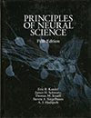

|
|
PLoSComp PressRelease JNNS HAKUBI JSTSakigake pdf RIKENPD WorldClock 2, 3 4 2 github Lecture Zahra&Yaser CompuNeuro Connectionists Mathjobs.org MathJob_Neuro
LSD Abbott Miller Fussi GTrans WeblioJP WeblioEN LSD Jabion 専門用語抽出
ABSTRACTS GS_SS
GS_HS MSAcademic
ScholarMeter Researchmap ResearcherID
ORCID matlabcentral Mendeley 研究者情報 ResearchMap isi_neco
isi_mit
matlabcentral
Histogramwiki
KDE
PSTHwiki Scribd
FIND
 NatureJob
NatureJob
Keioalias goo.gl/viSNG LinksMIT LinkBSI JHOME EHOME HS_WIKI SSLOGLIN HIST KERNEL Dora3.scphys http://176.32.89.45 SMZK Webhero smzk/res PDF Apeos CloudReader ipad
Gmail[s] GCal GDocuments GReader GAnalytics GAdwords GAdSense GWebmaster Goo.gl GHealth GBooks iG GVoice Gpdf
EC2 GAppEngine GAEDoc TestApp 1 2 3 Dajngo GVisualizer TwitterApp pointprocess GitHub Gist ProGit
Bing Connotea Citeulike Wiki SiteMapGen GCheck Portal ThesaurusJP LSD
Nikkei Reuters Yomiuri Asahi Mainichi Sankei NikkeiBusiness GendaiBusiness NiekkeiBP NikkeiBPPC ITmedia Impress Ascii Mycom FirstMonday GizModo Engadget Engadget.jp Slashdot.jp Slashdot WiredJ CNN ABC GoogleNews GoogleNewsJ F1000 Feedly
Twitter Facebook Youtube TBS Gyao YouTube Mixi Rapidshare tweffect tanalyzer tstat klout
BankofAmerica MoneyLook CITI.co.jp CITICard ShinseiBank0397 AMEX PL PLUS JCBCard MyJCB Paypal PriorityPass ANA JAL MILE OkiDoki RakutenTravel HOSTEL HarvestClub Sotoasobi Micquerlius
Google Google(J) GBlog Expedia Yahoo MyYahoo Yahoo.co.jp MyYahoo.co.jp YahooCalendar TokyoTV KyotoTV Amazon Amazon.co.jp Appl.jp Hulu Netflix Fujisan.co.jp Diamond
Riken BSI BISintra LIRAS RIKEN KINMU e-RadRIKEN e-Rad KagakuKenpo
TOYOIZUMILAB AMZS3 NCAWIKI Kinmu cnpsn-backup-2 Thermometer NCAShare Ganglia
MIT Neurostat staff MITmedical DeltaDental webmail Inside IST ISchO MITAC facilities library ecat3 TechCash MITPostdoc BlueCross setup nationalpostdoc Dr.Kazu sloan bostonwiki certificate SAPpersonalinfo cardoffice
cnspn cnpsnwiki Wako structure BSI Kakenhi riekn-jsps Kyoto NonlinGroup NonlinWiki NonlinSeminar Brain Shinomoto Mylibrary Map Library E-jornal Coop GoogleKyoto Yukawa JHU Sheridan Lib E-journals Homewood CNSLAB JHED Alumni HopkinsNET Keio APPI Alias Alumni
JCNS_rev JCNS JCNS_Realtime PRL PRE Nature Science PNAS PLoS Complexity NewSci SciAm SciNews TheSci SciDaily NatPhys PhysWeb SciFriday NPR GlobalGuerrillas ebook manybooks LindauNobel Shea-Brown
JournalCopyright Lead2Amazon arXiv arXivStatMech ISI JSTOR PubMed Scirus HyperPhysics Eng.Stat.Handbook EricWeisstein Cybernetica NumberTheory J.Abbrevi TaylorSeries NuericalRecipeinC XRS StatisticsDictionary GnuPlot MatlabHelp Mathematica AMSIS MathematicaTable StatSoft.com
j.neurophysiol. j.neurosci. neuron nature.neurosci. nat.rev.neurosci. annu.rev.neurosci. Neco NeCoMIT neco_submit popularNeco J.Phys.A PLoSCompBiol. Biometrika NecoISI Biol.Cybern. J. Physiol Paris PHYSICA D neuron PLoSMS
APS JPS JNNS JNNS-Journal JNSS JSPS Gakushin JSPS_HAKEN JASSO JFoundations JREC Josei Brain Science Foundation
NIPS NIPS_Proceedings Cosyne Perlewitz Visome INCFOnlineBooksStatisticsinJapanese

|
|
Grant: Houkatsu
SNS:ResearchMap NeuroSNS Blog: Pooneil Viking Shuzo Fujii-san Futaki Business/Marketing: nakajima Podcast: NeuroPod Ebook: Smashwords
UTOCW KEIO 大 阪大学、京都大学、慶應義塾大学、東京工業大学、東京大学、早稲田大学
論文投稿心得 Nov 25-28 ICONIP08 admin 統計関連学会連合大会
論文校正 alpha text editage JAPANESEPROOF
Catalog.com DynDns PlatOnline Kakaku.com J-BUS HarvestBus GuruNavi TrainMap Kuroneko Miquelrius
E-hon Elekitel DebThred GIMPS ApacheDoc Q9 coLinux wiki latex2html BibtexStyles StatDictionary MatlabHelp
Galapagos Derrick Anzen COMPLEX SYS DIMACS SanteFe NASA KenkyuRyugaku Louvre Cinema Kuroi-Juku Miraikan
BEC PSTH BayesStory HISTOGRAM BOOK harvest_bus OPIR Gyao
MBL ERRNET blog MBL Neuroinformatics
Tokeidai SpikingNeuronModels Edgewall
LinTipsZD LinSquare LinTips LinSecurity
Waseda Tosuken 10.1109/ICASSP.2009.4960380
VISA USEmbassy CameronInn
FOUNDINGMay25-28 German-Japanese G-J PDF JSPS Research Fellow
BOOK: Scott
UCLA machinelearnign_database Data_for_Matlab
athena.dialup.mit.edu
Humboldt(6years postdoc) Nakajima (-37)
View
my profile on 
 is where my documents live!
is where my documents live!

Journal of Computational Neuroscience誌に掲載された私たちのカーネル密度推定論文が引き続きダウンロード数の多い論文の中で上位につけています． LINK
Latex Poster 1 2 3 4 color fancybox Tex LatexShiyou TeXclip Excel VBA Begginer
Safura Rashid Shomali, Majid Nili Ahmadabadi, Hideaki Shimazaki, S Nader Rasuli. Theoretical study on spike-timing probability in a pair of pre-post synaptic neurons. Neuro2014 Sep 11 POSTER to be presented
Thomas Sharp, Hideaki Shimazaki, Yoshikazu Isomura and Tomoki Fukai. Behaviour- and layer-dependent synchrony in motor cortex during volitional arm movement. Neuro2014 Sep 11to be presented
2012 June 20 Workshop on neural information flow Tracking dynamic neural interactions in awake behaving animals Hideaki Shimazaki, RIKEN Brain Science Institute Neurons embedded in a network are correlated, and can produce synchronous spiking activities with millisecond precision. It is likely that these correlated activities organize dynamically during behavior and cognition, and this may be independent from spike rates of individual neurons. Consequently current analysis tools must be extended so that they can directly estimate time-varying neural interactions. The log-linear model is known to be useful for analysis of the correlated spiking activities but is limited to stationary data. In our approach, we developed a `state-space log-linear model’ that can estimate ever-changing neural interactions: this method is an extension of the familiar Kalman filter which can track system’s parameters as used in, e.g., automotive navigation systems. We applied this method to three neurons recorded from the primary motor cortex of a monkey engaged in a delayed motor task (data from Riehle et al., Science,1997). We found that depending on the behavioral demands of the task these neurons dynamically organized into a group which was characterized by the presence of higher-order (triple-wise) interaction. There was, however, no noticeable change in their firing rates. These results demonstrate that time-varying higher-order analysis allows us to detect subsets of correlated neurons that may belong to a larger set of neurons comprising a cell assembly. This is a collaboration work with Shun-ichi Amari (RIKEN), Emery N. Brown (MIT), and Sonja Gruen (Julich). Original paper: Shimazaki et al., PLoS CB 8(3): e1002385 |
old: iobb.net remotelink
Spike Statistics: Amari Dominik Kass Ventura Nakahara Victor Angela Yu Paninski Brown Gruen Nawrot Benjamin
Physiology: Alexa Riehle Baker Gerstein MuLabFetz Michael Shadlen data Newsome Hubel&Wiesel and Other Movies Schoenberg
J. Anthony Movshon Ehud Zohary Arun
Computational:Averbeck Seidemann Troyer Tishby Mark van Rossum Rotter
Statistics General: R. A. Fisher Scott Wand Kanazawa
bitly: hist
 |
|
いざ亜米利加 !
|
2013 Feb 18-19 統計数理研究所 神経科学と統計科学の対話３
Shimazaki H., Sadeghi K., Ikegaya Y., Toyoizumi T. The simultaneous silence of neurons explains structured higher-order interactions in spontaneous spiking activity.
2012 Nov 1-2 Workshop on statistical aspects of neural codingにて口頭発表しました．
Shimazaki H., Kolia Sadeghi, Yuji Ikegaya, Taro Toyoizumi. Joint inactivation statistics of population spiking activities. Nov 1
2012 Aug 3 
動的スパイク相関解析
Our
paper was published. Press release (English, German, Japanese) ScienceDaily
Shimazaki H., Amari S., Brown E. N., and Gruen S., State-space
Analysis of Time-varying Higher-order Spike Correlation for
Multiple Neural Spike Train Data. PLoS
Computational Biology 8(3): e1002385. link 
□ Shimazaki H., and Brown E. N., Copula-based Mixture Time-series Model of Continuous and Point Processes for Synthetic Analysis of Neural Signals. In Preparation.

2012 June
カーネル密度推定のMatlabコードをアップデートしました．固定幅による密度推定は速度を重視しています．可変幅による適応的スムージング法もお試し下さい．カーネル密度推定のバンド幅選択
日本生物物理学会 生物物理誌トピックス「神経細胞活動の統計モデルによる解析」第53巻第2号p.103-104 2013年3月28日掲載 
スパイク統計モデル入門 | ヒストグラムのビン幅選択 | カーネル密度推定のバンド幅選択 | 大 学院留学 | 集合写真 |
Wyeth Bair http://www.neuralsignal.org/
Fritz Sommer: CRCSN Gallant:Meural Prediction Challenge Woody: AuditoryData
http://neurodatabase.org
http://repositories.cdlib.org/mrrc/1/
http://home.earthlink.net/~perlewitz/database.html
http://microcircuit.epfl.ch/
FIND Neuroshare CARMEN NeuralCoding.org SpikeTrainAnalysisToolkit by J.Victor
R Modern Applied Statistics with S
Sample data is shown in the text area. For a larger sample, copy&paste this.
| Curriculum Vitae | |||
|
|||
生物進化の数理
私
達の神経系や筋肉はどのようにして今の形になったのでしょうか. 脳神経の計算機構の究極の目的とはなんでしょうか. 今日,
生物システムを研究する上で, そのシステムの設計を適応進化の結果として解釈することがしばしばです.
こうした疑問への回答にもう一つの選択肢を示した人物の一人が, 日本人の木村資生です.
木村は偶然に普及した遺伝子が集団に定着する可能性があることを厳密な数式で示しました. こうした遺伝子は生存と無関係でありながら,
集団に広まるのです. これを中立進化説といい, 発表当初大変な議論を引き起こしました. その後,
とくに淘汰圧を受けない分子進化においてこの理論は広く受け入れられています. では,
今日ダーウィンの適者生存説と木村の中立進化説の関係は明らかになったのでしょうか. どうして二つの理論が,
同時に受け入れられるのでしょうか.
ダーウィンの適者生存説の基には, マルサスの人口論, 人口は幾何級数的に増えるが食料は算術数的にしか増えない, という考えがあります. 私達は, マルサスの人口論に基づく最も単純な競争の過程において, ダーウィンの適応進化と木村の中立進化の二つの状態が現れることを発見しました. 他方からもう一方への移行は相転移現象として数学的に記述できることもわかりました. 適応進化・中立進化はただ一つの単純な競争の方程式に現れる, 明確に区別される二つの相だったのです. さらにこの二つを区別する相転移は, 統計物理学で現れるボーズ・アインシュタイン凝縮と数学の形式上同じ形になっているのです. ボーズ・アインシュタイン凝縮は温度を下げていくと, ある転移温度以下において最も低いエネルギー準位にすべての粒子があつまる現象です. この凝縮状態は, 競争の過程では, ある条件下で最も適応度の高い種が個体数を独占的に増やす状態, すなわち適応進化に対応します. これは偶然でしょうか. 実は両者とも粒子数あるいは個体数という正の整数の足し合わせに関する基本的な性質に基づいているのです. ですから必ずしも偶然とは言えませんが, 不思議なめぐり合わせです.
適応進化は壮大な最適化問題を解いていると解釈されます, これを生態学では適応度の山を登ると表現します. 一方で中立進化は多様性を生み出し, 従って環境の変化に耐性があります. もしかしたら, 二つの戦術をうまく活用している生物がいるかもしれません. たとえば自発的に両者の中間に近づくような過程（自己組織化臨界現象と呼びます）も両者の良い部分をとる戦術の一つになります. 統計学における最適化の問題も, 適応進化を模した粒子フィルタや遺伝的アルゴリズムが用いられています. ここで示された理論が, より効率的で頑健な適応探索の手法に結びつくことも期待しています.
- [1] Shimazaki H. and Niebur E., Phase transitions in
multiplicative competitive processes, Physical Review E (2005)
72(1), 011912

- [2] 日本語解説 島崎秀昭: 離散力学系の競争モデルに見られる相転移
--統計物理学の視点から-- 物性研究 ８６─４ pp. 534-535 （２００６年７月号） 及び 素粒子論研究
１１３巻２号（２００６年５月号）
ヒストグラムの最適ビン幅の説明：
図中の番号に照らして, 読んでください.
- スパイクデータを生成する背後のスパイクレート. 実験者には見えない. ヒストグラムを作成することは, この背後のスパイクレートを推定する試みである.
- 実験によりスパイク時系列データが得られる.
- 実験者はデータからヒストグラムを作成するが, どのビン幅のヒストグラムを作成したらいいのかわからない.
- 背後のスパイクレートの形とヒストグラムの形がどれほど似ているかを表す基準（MISE基準と呼ばれ る）を定義すれば, どのビン幅のヒストグラムが最適であるかがわかる. ただし背後のスパイクレートは実験者にはわからないため, MISEは直接計算できない.
- しかし考案する公式によりMISEをスパイクデータから推定できる. 各ビン幅のヒストグラムについてMISEの推定値を得ることができる.
- この推定値を最小とするビン幅が最適ビン幅である. 従ってデータが与えられただけで, どのビン幅が最適であるかがわかる.
Frontiers in Dynamics: Physical and Biological Systems May 22-24, Tokyo POSTER
Title: Self-organized criticality by natural selection
Hideaki Shimazaki
Whether the evolution of biological systems is subject to random genetic drift (frequency of alleles varies due to statistical fluctuation alone) or natural selection (beneficial alleles become common) is a long-lasting topic of population biology. I show that a simple equation of competition among asexual species provides synthetic views on this debate on 'chance and necessity'. In this model, organisms proliferate in a geometrical ratio (Malthusian model) while some of the offsprings are mutated. Selection is then applied to the population so that it normalizes the number of individuals. The model involves two states: a state in which the small differences in fitness of strains are not subject to the selection (a dominant strain is mostly determined by chance), and a state in which the fittest strain is picked up by the selection (survival of the fittest, or natural selection). The transition from one state to the other is understood from a formal analogy to the phase transition theory found in statistical mechanics.
Next, I show that if, on average, fitness of the mutants is inferior to, but positively correlated with the progenitors' fitness, the system approaches the critical state that lies between the neutral and the adaptive state by natural selection. The system undergoes initial adaptive evolution, permanently eliminating unfavorable strains, but then significantly slows down further evolution. I argue that diversity introduced by the self-organization process is advantageous in an ever changing environment.
| DATE | TOPICS | Reference |
| 031022 | Lecture by Miyashita: Physics of Phasetransition | |
| Population coding by phase oscillators by Nakao | ||
| Summary of Niwa's book | ||
| 030908 | Lecture by Amari at JNNS | |
| Japan | The Lee&Yang theory by Blythe and Evans | |
| The average probability of error by Wozencraft | ||
| The optimum receiver principle by Wozencraft | ||
| Review: Gauss process by Kubo | ||
| The sampling theorem by Reza | ||
| The sampling theorem by R.G. Gallager | ||
| Finite dimensional projections by R.G. Gallager | ||
| Signal Space Concepts by R.G. Gallager | ||
| Shannon's fundamental theorem of noisy channel | ||
| Direct-Sequence spread spectrum by flikkema | ||
| Cover Ch.3 p50 The Asymptotic Equipatition Property | ||
| Cover, p38 Fano's inequality | ||
| Blahut Ch8, p299 Estimation Theory | ||
| Cover p35 sufficient statistics | ||
| Replica calculation of the mutual information by sompolinsky | ||
| Cumulant expansion | ||
| Zhang and Sejnowski | ||
| 030508 | Brunel and Nadal: Parameter estimation and population coding | |
| The Kullback-Leibler distance and the fisher information by Dabak & Johnson | ||
| Geometric distribution | ||
| Hopkins weathercock | ||
| Branching Process | ||
| Frobenius-Peron equation | ||
| Fisher's Fundamental Theorem of Natural Selection by nasylaki | ||
| Tensor Vector by naoya tada | ||
| Similar Matrix, Trace, Einstein summation | ||
| Grandpartition function by det(1-zeta e) | ||
| 030330 | Abott and Dayan, effect of correlation to the fluctuation | |
| Schrodinger equation, nonstationary | ||
| Fisher Information, Cauchy-Schwartz inequality | ||
| Hermite Polynomial | ||
| PAC # | ||
| 031303 | Schrodinger equation and the Erenfest's theorem | |
| 030309 | Relative fluctuations by Kubo, Summary | |
| Fractional derivatives from Mehaute | ||
| Generation of random number, the direct method | ||
| Bose and Fermi statistics are identical for the equidistance energy distribution | ||
| 030202 | Lotka-Volterra equation of competition |